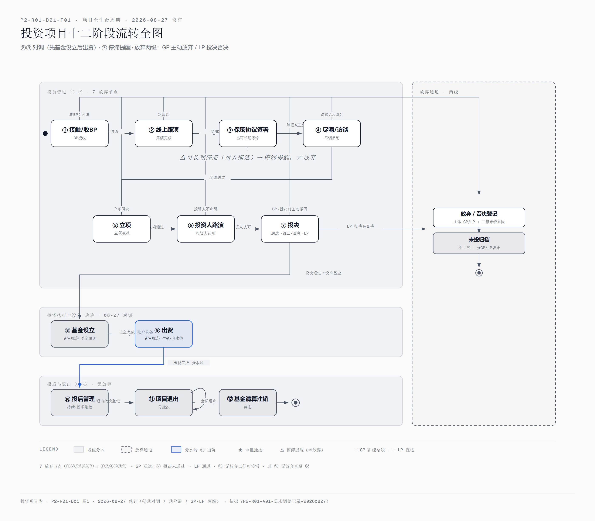
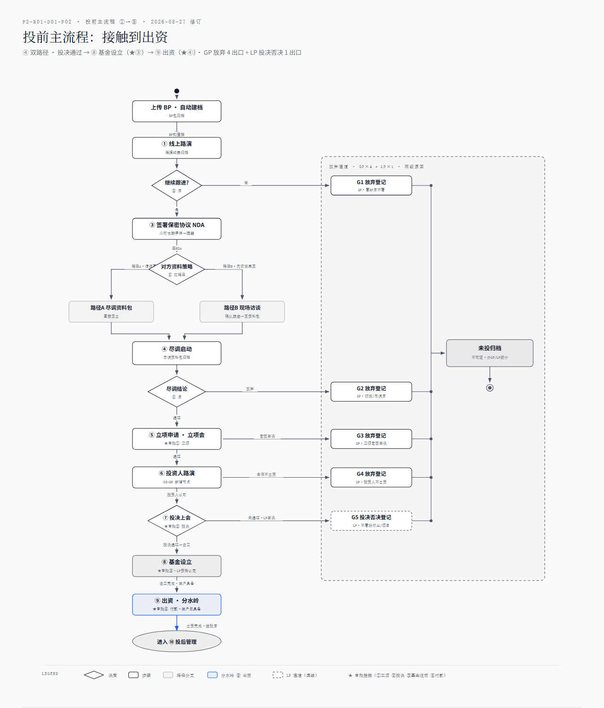
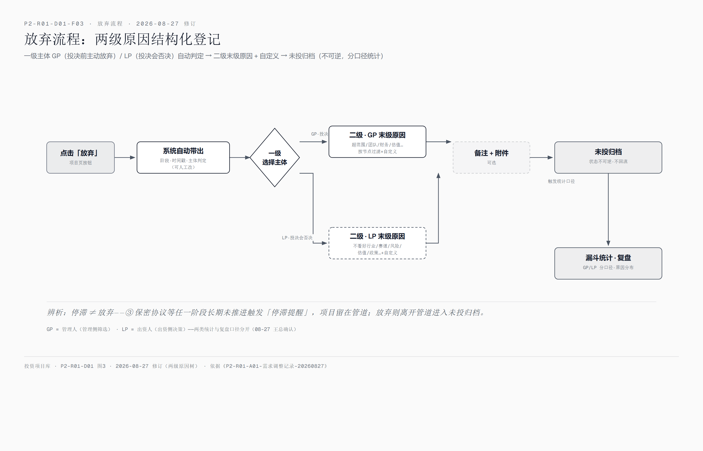
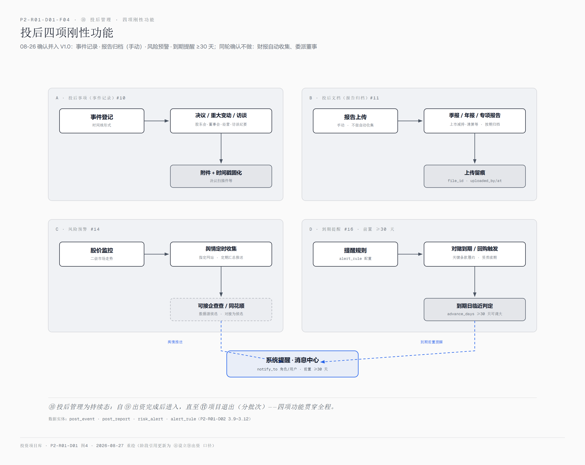
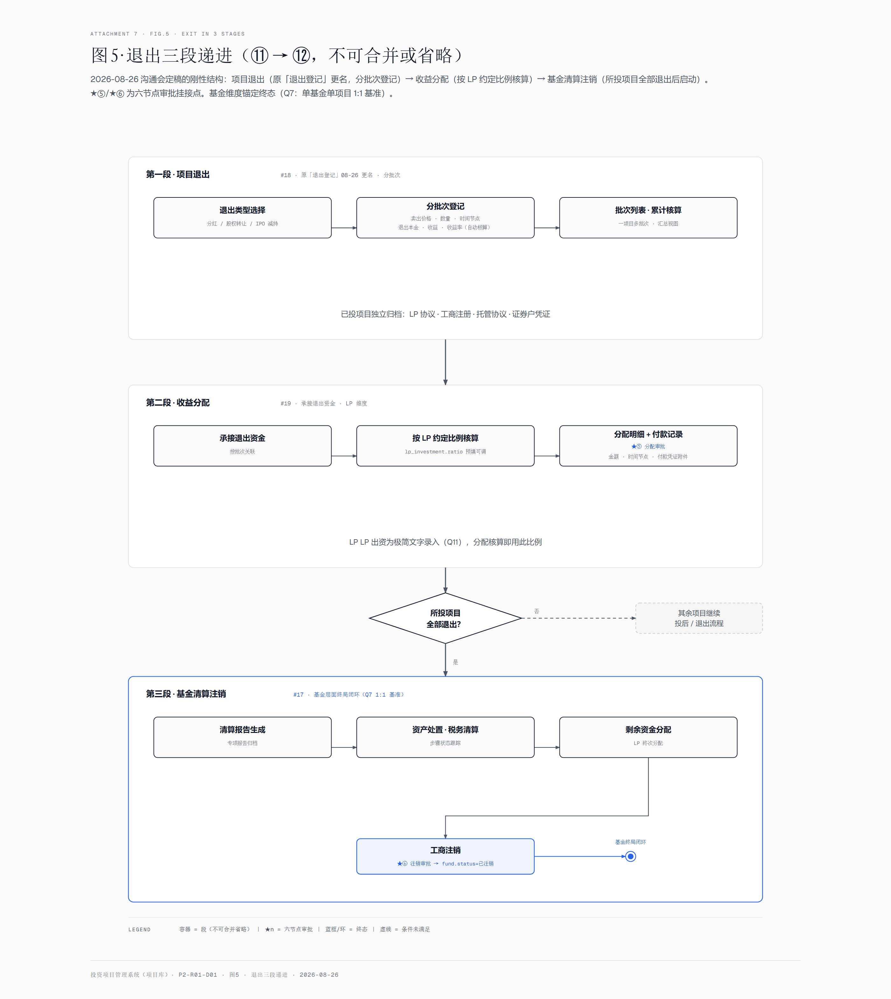
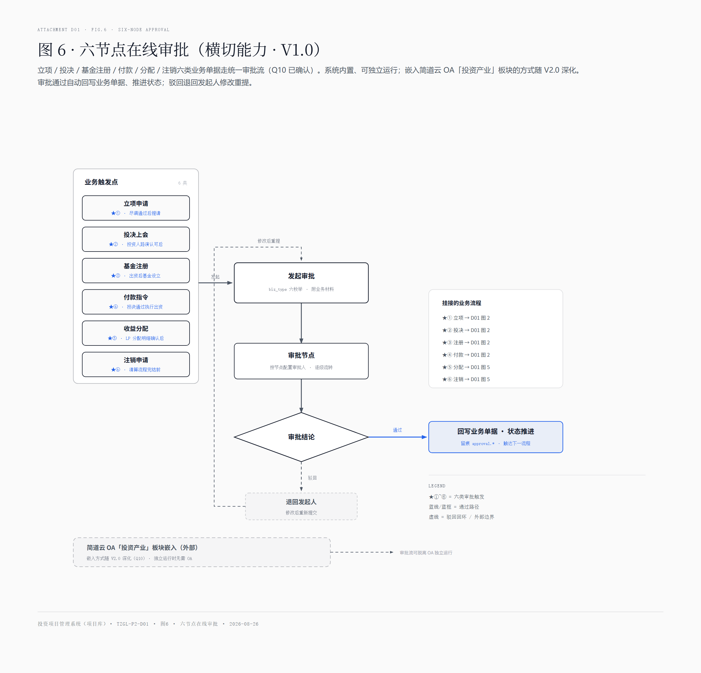

P2-R01-D01 · 六图合并渲染页 · 2026-08-27 修订
⑧⑨ 对调（先基金设立后出资）· ③ 停滞提醒 · GP/LP 两级放弃原因 · F01~F04 已按 08-27 规则重绘，F05/F06 沿用 08-26 版（内容不受调整影响）



高清交互版：P2-R01-D01-F03-放弃流程.html



投资项目库 · P2-R01-D01 · 2026-08-27 合并页重构（图片相对引用，与各 html 同文件夹） · 规则源：《P2-R01-A01-需求调整记录-20260827》